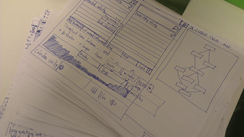

A little background about the project
The bad
- Previous framework reached its limits
- Not a lot of man power
- 3.5 developers
- 1 designer
- Whole frontend had to be redone
- Existing usability issues
The good
- Modern technology stack (Angular, Jade, Brunch, Bower)
- Chance to make big UI changes
- Whole frontend had to be redone
- Existing visual language
A new workflow
- Mocking low fidelity UI on paper 
- No design choices
- Good for rapid iterations
- Skipping photoshop
- Lacking interaction design
- Slow progress
- "Wasted" work
- Not suitable for multiple resolutions
- Design in the browser (and why it worked)
- Existing visual language easy to extend
- Test with real data
- Get a feeling of the interaction
- Prototype code => production code
Tooling that makes the work flow
Tooling that makes the work flow
Tooling that makes the work flow
<Thank You!>